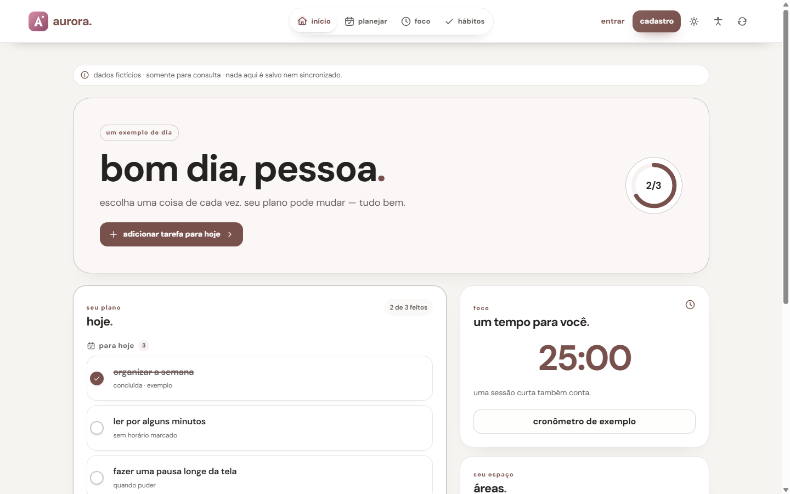

design system.
Referência viva: usa o CSS real do app. Tokens em src/css/design-system/tokens.css.
Tipografia
DM Sans. Use sempre var(--text-*); títulos fluidos usam --text-page-title, --text-hero, --text-display, --text-section e --text-heading.
--text-hero · saudaçãoBom dia, Ana.--text-3xl · 28Planeje o seu dia--text-2xl · 24Planeje o seu dia--text-title · 22Planeje o seu dia--text-xl · 20Planeje o seu dia--text-lg · 18Planeje o seu dia--text-base · 16Corpo de texto e campos de formulário--text-md · 15Texto de apoio em listas--text-sm · 14Texto secundário e rótulos--text-meta · 13Metadados e datas--text-xs · 12Legendas e contadores--text-2xs · 11SobretítuloCores
Botões
Hierarquia: primário avança, padrão é alternativa, fantasma navega, perigo remove. Altura, raio e recuos são compartilhados; foco e estados desabilitados permanecem distintos. Tamanhos: .sm 40 · padrão 44 · .large 52.
Atalhos compactos
Use .compact-card-grid ou .shortcut-grid para opções e destinos com pouco conteúdo. Em telas largas, os cartões ficam entre --card-compact-min-width e --card-compact-max-width (240–320 px); a última linha não se estica. Em telas estreitas, a grade vira uma coluna. Cada .shortcut-card é um único link, sem controles interativos aninhados.
Opções de áreas
Em Ajustes, cada área usa um cartão curto com ativação e descrição na primeira linha; visibilidade e ordenação ficam agrupadas abaixo. A grade respeita --card-compact-max-width e vira uma coluna em telas estreitas.
Listas
Use <ul class="list"> para itens independentes: cada linha tem superfície e respiro próprios. Para itens relacionados, envolva a lista em .grp e mantenha divisórias internas. O espaçamento usa --list-gap, --list-row-gap e --list-row-padding-*.
- Revisar tarefasOrganização · hojeHoje
- Planejar a semanaRotina · próxima etapaPendente
- Conta principalR$ 1.240,00
- Reserva mensalR$ 320,00
Campos
Altura mínima 48 px, borda visível e foco evidente. O campo mantém o valor e a validação do <select> nativo, mas a lista aberta segue o menu próprio do Aurora, com suporte a teclado, temas e rótulos acessíveis.
Chips, segmentado e selos
Chips e controles segmentados servem para filtros e alternâncias rápidas, não substituem o <select> em formulários. Indique a escolha com aria-pressed ou aria-selected, além da aparência.
Landing pública
O hero usa --hero-home, captura real com moldura simples e CTA principal de cadastro. Recursos usam .card; perguntas frequentes podem usar <details> para manter as respostas acessíveis.
Planeje sua rotina.
Tarefas, hábitos e finanças em um só lugar.

Onde ficam meus dados?
As respostas do FAQ devem refletir as decisões atuais do produto e as informações de privacidade publicadas.
Linha de hábito
- Ler por 10 minutos3 dias seguidos
- Caminhar ao ar livreComece hoje